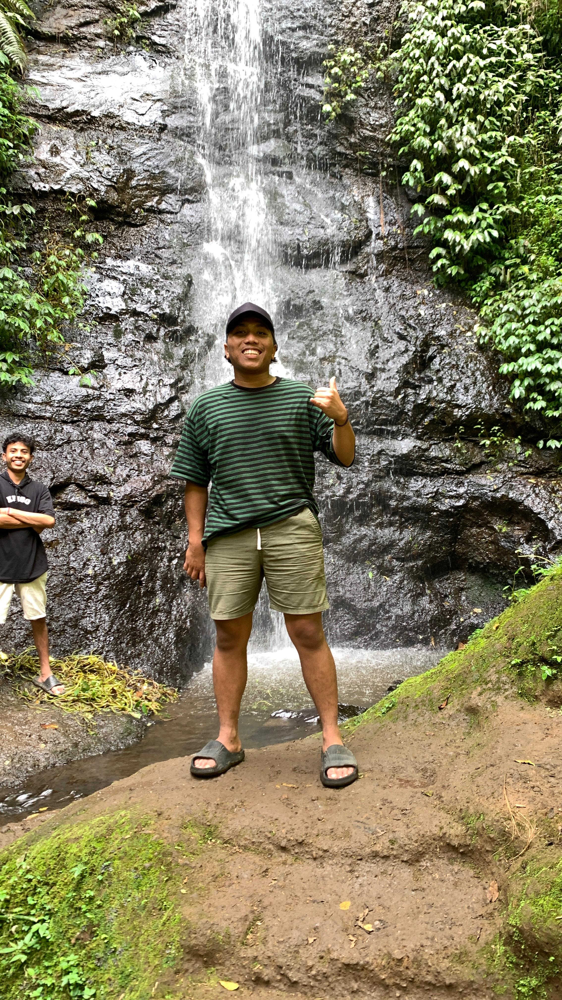
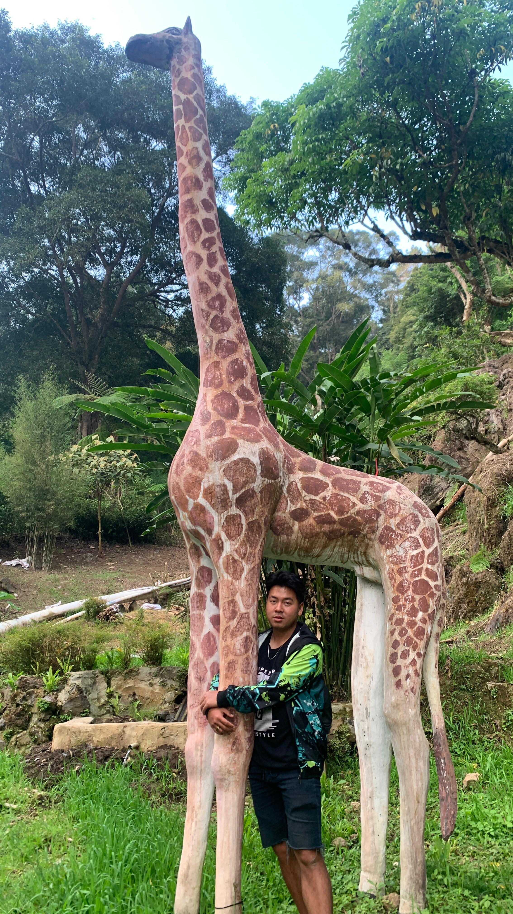

| Home | About | My Holiday | Contact |
My HolidayWritten by: Sagi Setiono - 2382016   Hello, My name is Sagi Setiono. I'd like to share a story about a past college holiday. On July 27, 2024, my friends and I gathered in front of the Maintenance Department. That day, we planned to visit Curug and the Tea Plantation near VIB Parongpong, Bandung Barat Regency. Without waiting too long, we decided to start our journey. Along the way, we admired the beautiful and charming villas, imagining how wonderful it would be to own one of them. Before reaching the Curug, we were greeted by breathtaking views, such as Mount Burangrang and Mount Tangkuban Parahu. Upon arriving at the Curug, we refreshed ourselves by playing in the water, enjoying the coolness of the waterfall after the long journey. Surrounded by lush green forest and the soothing sound of flowing water, the atmosphere was peaceful and rejuvenating. After fully enjoying the beauty of the Curug, we continued our trip to the Tea Plantation. We strolled among the tea rows, savoring the distinctive fresh aroma. We took photos in the tea plantation, and then headed home as it was getting late. The day's fatigue was all worth it with the stunning views we experienced. Please follow my instagram @zxsagi_ |
|||